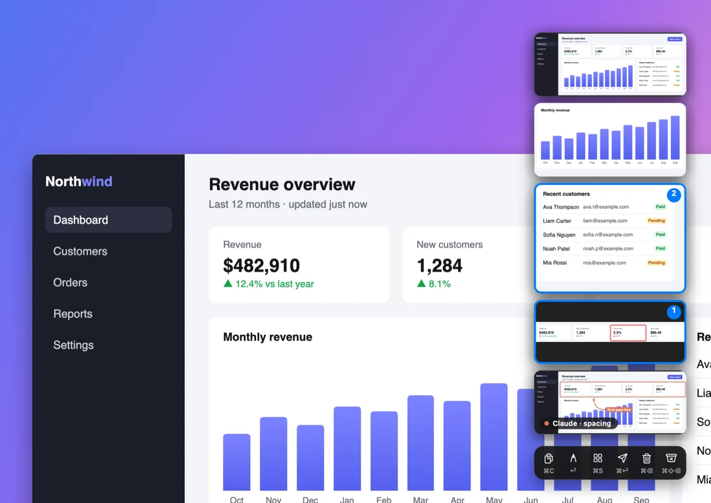

01Screenshots
Capture it. Mark it up. Share it.
Any area, window or scrolling page. Arrows, notes and blur stay editable.
⌥⇧⌘4

01Screenshots
Any area, window or scrolling page. Arrows, notes and blur stay editable.
02Recording
Record your screen with a camera bubble, your mic and the system sound.

03Meetings
Glimpse notices your calls and transcribes them on your Mac. Nothing leaves it.

04Your agent
Press ⌘↩ to send a marked-up screenshot to Claude Code or Codex. It can look at your screen and draw back, too.

01 02 03 04
Double-tap Shift to bring back your last 30 captures, then copy, send or stitch them.
